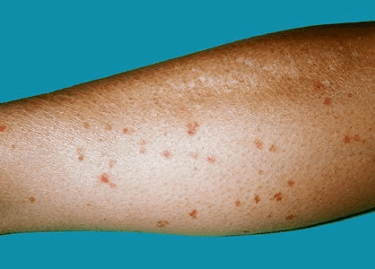

What is disseminated superficial actinic porokeratosis?
DSAP is a skin condition manifested by multiple, dry, scaly rings, each measuring up to 1 cm (1/2 inch) across. They are
found mainly on the forearms and legs. It is due to excessive sun exposure causing thickening of the skin. It is sometimes
confused with actinic keratosis which is also caused by sun exposure (See Patient Information Leaflet on Actinic Keratoses);
however, actinic keratosis is more likely to arise on the face and hands.
DSAP is twice as likely to develop in women compared with men and is more common in lighter skin type. Itnormally
develops between 30-50 years of age. It is not contagious.

Sun and/or ultraviolet light exposure causes DSAP. This condition tends to affect people with fair skin who burn easily
and tan poorly in the sun. It may appear more obvious in summer and less obvious in winter. The best way to stop this
skin condition from worsening is to avoid sun exposure (including sun beds). Patients taking medication or with illnesses
that weaken the body’s immune system are also more likely to develop this skin condition.
Yes. On average about half of the children of an affected parent could develop DSAP, although a certain amount of
accumulated sun exposure is required for it to appear.
DSAP is usually asymptomatic. The affected areas often feel dry and rough. However exposure to sun can cause them to itch
and grow in size (still remaining small) and number.
DSAP normally starts as a brownish red or brown spot and can grow from 2 mm up to 2 cm (1/2 inch) in diameter.
The affected area normally has a thinned centre surrounded by a ridge-like border.
DSAP itself is harmless. However many people with DSAP have had significant exposure to the sun and so may also
have other skin lesions caused by sun damage including skin cancer. It is therefore important to see your GP or
skin specialist if you notice any new or changing skin lesions.
A sample of the affected area may be removed under local anaesthetic by a dermatologist for microscopic examination in the laboratory
(known as a skin biopsy). However, the appearance of the affected area, along with the history, may enable a doctor to make the diagnosis.
Unfortunately there is no cure for DSAP. The best way to avoid worsening of this skin condition is to avoid
exposure to the sun and regular use of sunblock.
- CryotherapyLesions that may treated by cryotherapy include:
- Actinic keratosesAn actinic keratosis is a scaly spot found on sun-damaged skin. It is also known as solar keratosis.
It is considered precancerous or an early form of cutaneous squamous cell carcinoma.
- Viral wartsWarts are very common non-cancerous growths of the skin caused by infection with human papillomavirus (HPV), a
DNA virus. More than 100 HPV subtypes are known, giving rise to a variety of presentations. Skin infection occurs in the superficial
layers of the epidermis, causing proliferation of the keratinocytes (skin cells) and hyperkeratosis.
- Seborrhoeic keratoses (senile warts)A seborrhoeic keratosis is a harmless warty spot that appears during adult life as a
common sign of skin aging. Some people have hundreds of them.
Specialist dermatologists sometimes freeze small skin cancers such as superficial basal cell and in situ squamous
cell carcinomas (intraepidermal carcinoma, Bowen disease), but this is not always successful so careful follow-up is necessary.
Freezing may be the most suitable way of getting rid of many different kinds of surface skin lesion. It is relatively inexpensive,
safe, and reliable. However, it is important that the skin lesion has been properly diagnosed. It should not be used to treat melanoma
or any undiagnosed pigmented lesion that could be melanoma.
- 5-Fluorouracil creamTopical fluorouracil 5% cream is often abbreviated to 5-FU. The trade name in New Zealand is Efudix™ and
it is a prescription medicine. It is a cytotoxic agent or antimetabolite, ie it is toxic to living cells, especially to certain
cancer or precancerous cells. It destroys sun-damaged skin cells, so the skin appears smoother and more youthful.
Fluorouracil is also occasionally used to treat the following skin conditions:
- Superficial basal cell carcinoma
- Psoriasis
- Viral warts
- Genital warts
- Disseminated superficial porokeratosis and linear porokeratosis
- Imiquimod creamImiquimod is a an immune response modifier. It is manufactured as a 5% cream called Aldara™.
Imiquimod works by stimulating the immune system to release a number of chemicals called cytokines,
which are important in fighting viruses and destroying cancer cells.
- Tretinoin creamTopical retinoids are creams, lotions and gels containing one or other of group of medicines derived from Vitamin A.
These compounds result in proliferation and reduced keratinisation of skin cells independent of their functions as a vitamin.
- Ingenol mebutate gelIngenol mebutate (also called ingenol-3-angelate) is an extract of a common plant, petty spurge or milk weed
(Euphorbia peplus). Ingenol mebutate is derived from a cultivar of Euphorbia peplus that is specifically grown in Queensland for this purpose.
It has been shown to be useful in the treatment of superficial skin cancers including actinic keratoses (actinic keratoses), which are scaly
spots caused by long term sun exposure.
- Alpha hydroxy acid creamAlpha hydroxy acids or AHAs rejuvenate the skin by encouraging the shedding of old, sun-damaged surface skin cells.
Glycolic acid is a fruit acid most frequently used for facial treatments but lactic and citric acid are also useful. Lactic acid is not
strictly a fruit acid, as it is found in meat, cheese, yogurt, however it's also in pickled vegetables.
- Calcipotriol ointmentCalcipotriol is a vitamin-D derivative, about 1% as powerful as the natural hormone calcitriol (also known as 1,25
dihydroxycholecalciferol).Calcipotriol is a prescription medication used mainly for psoriasis. It is moderately or very effective for about 80%
of patients. This means the patches become less scaly and thick, but red patches often persist despite continued treatment.
- Diclofenac gelTopical 3% diclofenac gel in 2.5% hyaluronic acid (Solaraze®, Bioglan Pharma, Florida USA) is used as a field treatment
for actinic keratoses (AKs).The active ingredient of the gel, diclofenac sodium, is a non-steroidal anti-inflammatory drug (NSAID).
NSAIDs provide anti-inflammatory and anti-neoplastic (anti-cancer) benefits.
- Oral acitretinAcitretin is an oral retinoid (vitamin-A derivative) used to treat severe psoriasis, usually at a dose of 0.25 – 1 mg per kg body weight per day.
It is best taken after a meal because it needs fat to be absorbed through the gut wall.Acitretin is particularly effective for pustular
psoriasis, erythrodermic psoriasis and psoriasis affecting hands and feet. It is not effective for psoriatic arthritis.
- Photodynamic therapyPhotodynamic therapy (PDT) is treatment used mainly for superficial types of skin cancer. PDT is effective
in treating actinic keratoses and superficial basal cell carcinomas.
- Laser treatmentsThere are several types of lasers used in skin laser surgery. Older laser technologies such as the
continuous wave (CW) lasers of CO2 and argon have been largely replaced with quasi-CW mode lasers and pulsed laser systems.
The wavelength peaks of the laser light, pulse durations and how the target skin tissue absorbs this, determine the clinical applications of the laser types.